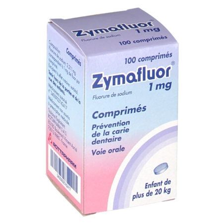

Зімафлуор / Zymafluor / Зимафлуор - (Німеччина)
Виробник: Німеччина

Контактная информация:
Цена: 925 грн/уп.
В наличии
Виробник: Німеччина
Цена: 925 грн/уп.
В наличии
Именно в FarmItal вы можете купить Зимафлуор, Zymafluor,Зимафлуор в Украине. Гарантирован качественный витаминный комплекс из Германии!
Доставка Zymafluor осуществляется транспортными компаниями, сроки выполнения заказа оговариваются менеджером Фармитал. Вы можете заказать Зимафлуор,Зимафлуор в городах: Одесса, Херсон, Чернигов, Северодонецк, Бердянск, Бровары, Днепр, Винница, Киев, Славянск, Полтава, Краматорск, Белая Церковь, Каменское, Мариуполь, Черновцы, Александрия, Камь янец-подольский, Львов, Запорожье, Кропивницкий, Житомир, Ивано-Франковск, Сумы, Черкассы, Константиновка, Мелитополь, Кривой Рог, Ровно, Луцк, Никополь, Павлоград, Ужгород, Кременчуг, Лисичанск, Хмельницкий, Тернополь, Харьков, Николаев, а также в других населённых пунктах Украины.
- пероральные капли В картонной упаковке содержится бутылочка 20 мл.
- таблетки 0.25 мг. Полипропиленовый контейнер 200 таблеток.
- таблетки 0.50 и 1 мг Полипропиленовый контейнер 100 таблеток.
- Пероральные капли содержат:
Таблетки содержат:
дети:
Не превышать рекомендуемую дозу. Рекомендуется начать прием фторида до прорезывания зубов. Капли подходят для новорожденных из-за облегчения введения. Как только возраст позволяет, то целесообразно использовать таблетки Зимафлуора.
- небольшие высыпания (эритема, крапивница).
- гиперчувствительность к активному или вспомогательному веществу.
Препарат не требует никаких особых мер предосторожности. Срок годности 3 года.